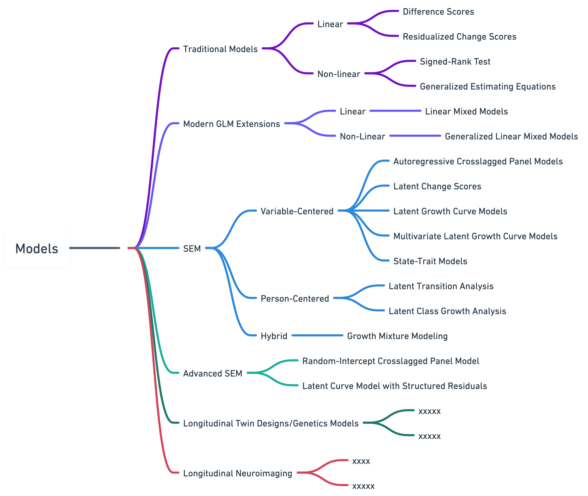

Longitudinal Analysis Manuscript: Working Draft
Longitudinal Analysis using data from the ABCD Study
The Adolescent Brain Cognitive Development (ABCD) Study presents a unique opportunity for researchers to investigate developmental processes in a large, diverse cohort of children and adolescents. Given the complex nature of the longitudinal data collected in the ABCD Study, researchers are likely to encounter a myriad of methodological and analytic considerations and concerns. This review provides a comprehensive examination of key issues and techniques related to longitudinal data analysis, with a specific focus on use with the ABCD Study dataset. The text discusses model assumptions, common violations (e.g., independent and identically distributed residuals, heterogeneous variability), and their implications for valid inference. The importance of appropriately modeling covariance structures, understandings trade-offs between model fit and parsimony, and challenges related to sample size, attrition, and missing data are highlighted. Consideration is given to the importance of selecting appropriate statistical models to account for correlations in repeated measurements and the assumptions underlying these models. The review also differentiates between linear and non-linear models in the context of continuous and discrete data, emphasizing various distributional assumptions and the necessity of choosing appropriate models and statistical methods. By addressing these complexities, the review seeks to equip researchers with the necessary knowledge and tools to make informed decisions as they navigate effectively analyzing and interpreting data available in the ABCD Study.
1 Introduction
The Adolescent Brain Cognitive Development (ABCD) Study® is the largest long-term investigation of neurodevelopment and child health in the United States. Conceived and initiated by the National Institutes of Health (NIH), this landmark prospective longitudinal study aims to transform our understanding of the genetic and environmental influences on brain development and their roles in behavioral and health outcomes in adolescents (Volkow et al. 2018). At its heart, the study is designed to chart the course of human development across multiple, interacting domains from late childhood to early adulthood and to identify factors that lead to both positive and negative developmental outcomes. Central to achieving these goals is the ABCD Study’s® commitment to an open science framework designed to facilitate access to and sharing of scientific knowledge by espousing practices that increase openness, integrity, and reproducibility of scientific research (e.g., public data releases). In this sense, the ABCD Study® is a collaboration with the larger research community, with the rich longitudinal nature of the ABCD Study dataset allowing researchers to perform a variety of analyses of both methodological and substantive interest. Together, this presents a unique opportunity to significantly advance our understanding of how a multitude of biopsychosocial processes emerge and unfold across critical periods of development. In the following text, we describe methods for longitudinal analyses of ABCD Study data that can address its fundamental scientific aims, as well as challenges inherent in a large population-based long-term study of adolescents. We begin with a brief orientation to the ABCD Study and its accompanying publicly available dataset.
1.1 The ABCD Study® Data
Participants enrolled in the ABCD Study include a large cohort of youth (n=11,880) aged 9-10 years at baseline and their parents/guardians. The study sample was recruited from household populations in defined catchment areas for each of the 21 study sites across the United States (information regarding funding agencies, recruitment sites, investigators, and project organization can be obtained at the ABCD Study website). The ABCD Study is collecting longitudinal data on a rich variety of outcomes that will enable the construction of complex etiological models by incorporating factors from many domains simultaneously. Each new wave of data collection provides the building blocks for conducting probing longitudinal analyses that allow us to characterize normative development, identify variables that presage deviations from prototypic development, and assess a range of outcomes associated with variables of interest. This data includes a neurocognitive battery (Luciana et al. 2018; Thompson et al. 2019), mental and physical health assessments (Barch et al. 2018), measures of culture and environment (Zucker et al. 2018), substance use (Lisdahl et al. 2021), biospecimens (Uban et al. 2018), structural and functional brain imaging (Casey et al. 2018; Hagler et al. 2019), geolocation-based environmental exposure data, wearables, and mobile technology (Bagot et al. 2018), and whole genome genotyping (Loughnan et al. 2020). Many of these measures are collected at in-person annual visits, with brain imaging collected at baseline and every other year going forward. A limited number of assessments are collected in semi-annual telephone interviews between in-person visits. Data are publicly released on an annual basis through the NIMH Data Archive. By necessity, the study’s earliest data releases were cross-sectional (i.e., the baseline data), however, the most recent public data release (NDA Release 4.0) contains data collected across three annual assessments, including two imaging assessments (baseline and year 2 follow-up visits).
1.2
2 Longitudinal Research
2.1 Basic Concepts and Considerations
There are several important concepts to consider when conducting longitudinal analyses in a developmental context. These include different ways of thinking about developmental course, whether certain periods of development are relatively sensitive or insensitive to various types of insults or stressors, whether some time periods or situations inhibit the expression of individual differences due to extreme environmental pressures, and whether the same behavior manifested at different times represent the same phenomenon or different ones. Further, in the case of developmentally focused longitudinal research, each new measurement occasion not only provides a more extended portrait of the child’s life course but also brings with it greater methodological opportunities to exploit statistical models that distinguish within and between subject effects and that loosen constraints that could be imposed on the furtherance of critical scientific questions. Appreciation of these and other issues can help to guide the analysis and interpretation of data and aid translation to clinical and public health applications.
2.1.1 Vulnerable periods.
Development normatively progresses from less mature to more mature levels of functioning. However, unique epochs and experiences can alter the course of this idealized form of development. Consider research that shows cannabis use during adolescence is associated with later psychosis to a greater degree than cannabis use initiated later in development (Arseneault et al. 2002; Bechtold et al. 2016; Hasan et al. 2020; Semple, McIntosh, and Lawrie 2005); or, similarly, experimental research on rodents that shows rodent brains to be especially sensitive to the neurotoxic effects of alcohol on brain structure and learning early in development (corresponding to early adolescence in humans) (Spear 2016; Crews et al. 2000; Ji et al. 2018). These examples highlight the importance of considering the role of vulnerable periods – temporal windows of rapid brain development or remodeling during which the effects of environmental stimuli (e.g. cannabis exposure) on the developing brain may be particularly pronounced– when trying to establish an accurate understanding of the association between exposures and outcomes.
2.1.2 Developmental disturbances.
Whereas vulnerable periods heighten neurobiological susceptibility to environmental influences, at other times environmental pressures will tend to suppress stability and disrupt the orderly stochastic process of normative development (e.g., Schulenberg et al. 2019). This situation reflects a developmental disturbance in that the normal course of development is “disturbed” for some time by some time-limited process. In such cases, we might find that prediction of behavior in the period of the disturbance is reduced and/or, similarly, the behavior exhibited during the disturbance might have less predictive power with respect to distal outcomes compared to the behavior exhibited before and following the disrupted period. That is, once the environmental stimuli are removed (or the individual is removed from the environment), individual differences are again more freely expressed and the autoregressive effects increase to levels similar to those before entering the environment.
2.1.3 Developmental snares and cascade effects.
Normative development can also be upended by experiences (e.g., drug use) that, through various mechanisms, disrupt the normal flow of development wherein each stage establishes a platform for the next. For instance, substance use could lead to association with deviant peers, precluding opportunities for learning various adaptive skills and prosocial behaviors, in effect, creating a “snare” that retards psychosocial development such as maturing out of adolescent antisocial behavior (Moffitt 2015). Relatedly, the consequences of these types of events can cascade (e.g., school dropout, involvement in the criminal justice system) so that the effects of the snare are amplified (e.g., Masten et al. 2005; Rogosch, Oshri, and Cicchetti 2010). Although conceptually distinct from vulnerable periods, both of these types of developmental considerations highlight the importance of viewing behavior in the context of development and the importance of attempting to determine how various developmental pathways unfold.
2.1.4 Distinguishing developmental change from experience effects.
One can often observe systematic changes over time in a variable of interest and assume this change is attributable to development. To this point, cognitive abilities (e.g, verbal ability, problem-solving) normatively grow earlier in development and often decline in late life (e.g., memory, speed of processing). However, the observed patterns of growth and decline often differ between cross-sectional vs. longitudinal effects (Salthouse 2014) where subjects gain increasing experience with the assessment with each successive measurement occasion. Such experience effects on cognitive functioning have been demonstrated in adolescent longitudinal samples similar to ABCD (Sullivan et al. 2017) and highlight the need to consider these effects and address them analytically. In the case of performance-based measures [e.g., matrix reasoning related to neurocognitive functioning; see Salthouse (2014)], this can be due to “learning” the task from previous test administrations (e.g., someone taking the test a second time performs better than they did the first time simply as a function of having taken it before). Even in the case of non-performance-based measures (e.g., levels of depression), where one cannot easily make the argument that one has acquired some task-specific skill through learning, it has been observed that respondents tend to endorse lower levels on subsequent assessments (e.g., Beck et al. 1961; see French and Sutton 2010) and this phenomenon has been well documented in research on structured diagnostic interviews (Robins 1985). While it is typically assumed that individuals are rescinding or telling us less information on follow-up interviews, there is reason to suspect that in some cases the initial assessment may be artefactually elevated (see Shrout et al. 2018). Some designs (specifically, accelerated longitudinal designs) are especially well suited for discovering these effects and modeling them. While ABCD was not designed as an accelerated longitudinal design, the variability in age at the time of baseline recruitment (9 years, 0 months to 10 years, 11 months) allows some measures, collected every year, to be conceptualized as an accelerated longitudinal design. Moreover, it is possible that in later waves, patterns of longitudinal missing data will allow some analyses to assess the confounded effects of age and the number of prior assessments. However, ABCD is fundamentally a single-cohort, longitudinal design, where a number of prior assessments and age are highly confounded, and for, perhaps, most analyses, the possible influence of experience effects needs to be kept in mind.
3 Longitudinal Data
3.1 Interpretation / Issues / Pitfalls & Assumption
The hallmark characteristic of longitudinal data analysis is its application to repeated assessments of the same assessment targets (e.g., individuals, families) across time. While the primary reason for collecting longitudinal data is in pursuit of addressing scientific questions, from a methodological perspective, having multiple observations over time allows researchers to identify potentially problematic observations when highly improbable longitudinal patterns are observed. That is, we can ask more nuanced questions and make stronger inferences as our number of time-ordered observations grows assuming we have assessed the “right” variables and the timings of our observations comport with the temporal dynamics of the mechanisms of interest .
3.1.1 Two Time Points versus Three or More.
Although the clear leap to the realm of longitudinal data involves going from one assessment to two or more assessments, there are also notable distinctions in designs based on two-assessment points versus three or more measurement occasions. Just as cross-sectional data can be informative in some situations, two waves of data can be beneficial in contexts such as when experimental manipulation is involved (e.g., pre/post tests), or if the central goal is prediction (e.g., trying to predict scores on Variable A at time T as a function of prior scores on Variable A and Variable B at time T-1). At the same time, data based on two assessments are inherently limited on multiple fronts. As (Rogosa, Brandt, and Zimowski 1982) noted approximately forty years ago, “Two waves of data are better than one, but maybe not much better”. These sentiments are reflected in more contemporary recommendations regarding best-practice guidelines for prospective data, which increasingly emphasize the benefits of additional measurement occasions for model identification and accurate parameter estimation. It is also consistent with research recommending that developmental studies include three or more assessment points, given it is impossible for data based on two-time points to determine the shape of development (since linear, straight line change is the only possible form, given two assessments; see (Duncan and Duncan 2009)). Research designs that include three or more time points allow for increasingly nuanced analyses that more adequately tease apart sources of variation and covariation among the repeated assessments (King et al. 2018)– a key aspect of inferential research. To illustrate, developmental theories are typically interested in understanding patterns of within-individual change over time (discussed in further detail, below); however, two data points provide meager information on change at the person level. This point is further underscored in a recent review of statistical models commonly touted as distinguishing within-individual vs between-individual sources of variance in which the study authors concluded “… researchers are limited when attempting to differentiate these sources of variation in psychological phenomenon when using two waves of data” and perhaps more concerning, “…the models discussed here do not offer a feasible way to overcome these inherent limitations” Andrew K. Littlefield et al. (2021). It is important to note, however, that despite the current focus on two-wave designs versus three or more assessment waves, garnering three assessment points is not a panacea for longitudinal modeling. Indeed, several contemporary longitudinal models designed to isolate within-individual variability [e.g., the Latent Curve Model with Structured Residuals; Curran et al. (2014)] require at least four assessments to parameterize fully and, more generally, increasingly accurate parameter estimates are obtained as more assessment occasions are used (Duncan and Duncan 2009).
3.1.2 Types of stability and change
If one were to try to sum up what development in a living organism is exactly, one could plausibly argue it’s the characterization of stability and change as the organism traverses the life course. There are a few different ways to think of stability (and change). Consider we measure the height of all youth in a 6th-grade class, once in the fall at the beginning of the school year and once again in the spring at the end of the school year. A common first step may be to compare the class’s average height values obtained at these two different measurement occasions. This comparison of the average scores for the same group of individuals at multiple time points is referred to as “mean-level” stability as it provides information about continuity and change in the group level of an outcome of interest (e.g., height) over time. Another type of stability involves calculating the correlation between the values obtained at different time points (e.g., ‘height in the fall’ with ‘height in the spring’). This type of “rank-order” stability evaluates between-individual change by focusing on the degree to which individuals retain their relative placement in a group across time. Consider someone who is the shortest person in their class in 6th grade may grow considerably over the school year (i.e., exhibit mean level change), but remain the shortest person among their classmates. That is, the individual is manifesting a type of rank-order stability. Both types of stability and change are important. Mean-level change in certain traits might help to explain why, in general, individuals are particularly vulnerable to social influences at some ages more than others; rank order change might help to quantify the extent to which certain characteristics of the individual are more trait-like. For example, in some areas of development, there is considerable mean-level change that occurs over time (e.g., changes in Big 5 personality traits), but relatively high rank-order stability. Despite the useful information afforded by examining mean-level and rank-order change, these approaches are limited in that they provide little information about patterns of “within-individual” change and, in turn, can result in fundamental misinterpretations about substantial or meaningful changes in an outcome of interest(Curran and Bauer 2011).

There is growing recognition that statistical models commonly applied to longitudinal data often fail to align with the developmental theory they are being used to assess (e.g., Curran et al. 2012; Hoffman 2015; Andrew K. Littlefield et al. 2021). Specifically, developmental studies typically involve the use of prospective data to inform theories that are concerned with clear within-person (i.e., intraindividual) processes (e.g., how phenotypes change or remain stable within individuals over time) (e.g., see Curran and Bauer 2011). Despite this, methods generally unsuited for disaggregating between- and within-person effects (e.g., cross-lagged panel models [CLPM]) remain common within various extant literatures. Fortunately, there exists a range of models that have been proposed to tease apart between- and within-person sources of variance across time (see Andrew K. Littlefield et al. 2021; Orth et al. 2021). Most of these contemporary alternatives incorporate time-specific latent variables to capture between-person sources of variance and model within-person deviations around an individual’s mean (or trait) level across time (e.g., RI-CLPM, Hamaker, Kuiper, and Grasman 2015; LCM-SR, Curran et al. 2014). It is important to note however that these models require multiple assessments waves (e.g., four or more to fully specify the LCM-SR), additional expertise to overcome issues with model convergence, and appreciation of modeling assumptions when attempting to adjudicate among potential models in each research context (see Andrew K. Littlefield et al. 2021, for further discussion).
3.1.3 Model Assumptions
Many statistical models assume certain characteristics about the data to which they are being applied. Common assumptions of parametric statistical models include normality, linearity, and equality of variances. These assumptions must be carefully considered before conducting analysis so that valid inferences can be made from the data; that is, violation of a model’s assumptions can substantively alter the interpretation of results. For example, longitudinal data can exhibit heterogeneous variability (i.e., the variance of the response changes over the duration of the study) that will need to be accounted for. Similarly, statistical models used to analyze longitudinal data often entail a range of assumptions that must be closely inspected. One common prerequisite for analyses of repeated measures data is the assessment of longitudinal measurement invariance, which helps to establish whether or not a construct is measured consistently over time (Liu et al. 2017; Van De Schoot et al. 2015; Willoughby, Wirth, and Blair 2012). Establishing longitudinal measurement invariance, in turn, provides researchers with greater confidence that any change over time identified for a construct is attributable to individual change rather than a measurement artifact. Another central issue for repeated measurements on an individual is how to account for the correlated nature of the data. Traditional techniques, such as a standard regression or ANOVA model, assume residuals are independent and thus are inappropriate for designs that assess (for example) the same individuals across time. That is, given the residuals are no longer independent, the standard errors from the models are biased and can produce misleading inferential results. Although there are formal tests of independence for time series data (e.g., the Durbin-Watson statistic (Durbin and Watson 1950)), more commonly independence is assumed to be violated in study designs with repeated assessments. Therefore, an initial question to be addressed by a researcher analyzing prospective data is how to best model the covariance structure of said data.
3.1.4 Covariance Structures
Statistical models for longitudinal data include two main components to account for assumptions that are commonly violated when working with repeated measures data: a model for the covariance among repeated measures (both the correlations among pairs of repeated measures on an individual and the variability of the responses on different occasions), coupled with a model for the mean response and its dependence on covariates (eg, treatment group in the context of clinical trials). This allows for the specification of a range of so-called covariance structures, each with its own set of tradeoffs between model fit and parsimony (e.g., see Kincaid 2005).
3.1.6 Continuous and Discrete Indicators
Identification of optimal statistical models and appropriate mathematical functions requires an understanding of the type of data being used. Repeated assessments can be based on either continuous or discrete measures. Examples of discrete measures include repeated assessments of binary variables (e.g., past 12-month alcohol use disorder status measured across ten years), ordinal variables (e.g., a single item measuring the level of agreement to a statement on a three-point scale including the categories of “disagree”, “neutral”, and “agree” in an ecological momentary assessment study that involves multiple daily assessments), and count variables (e.g., number of cigarettes smoked per day across a daily diary study). In many ways, the distributional assumptions of indicators used in longitudinal designs mirror the decision points and considerations when delineating across different types of discrete outcome variables, a topic that spans entire textbooks (e.g., see Lenz 2016). For example, the Mplus manual (Muthén 2017) includes examples of a) censored and censored-inflated models, b) linear growth models for binary or ordinal variables, c) linear growth models for a count outcome assuming a Poisson model, d) linear growth models for a count outcome assuming a zero-inflated Poisson model and e) discrete- and continuous-time survival analysis for a binary outcome. Beyond these highlighted examples, other distributions (e.g., negative binomial) can be assumed for the indicators when modeling longitudinal data. These models can account for issues that can occur when working with discrete outcomes, including overdispersion (when the variance is higher than would be expected based on a given distribution) and zero-inflation [when more zeros occur than is expected based on a given distribution; see Lenz (2016)]. Models involving zero-inflation parameters are referred to as two-part models, given one part of the model primarily is used to predict zero-inflation whereas the other part of the model predicts outcomes consistent with a given distribution [e.g., Poisson distribution; see Farewell et al. (2017), for a review of different types of two-part models for longitudinal data]. Given the sheer breadth of issues relevant to determining better models for discrete outcomes, it is not uncommon for texts on longitudinal data analysis to only cover models and approaches that assume continuous indicators (e.g., T. D. Little 2013). However, some textbooks on categorical data analysis provide more detailed coverage of the myriad issues and modeling choices to consider when working with discrete outcomes [e.g., Lenz (2016), Chapter 11 for matched pair/two-assessment designs; Chapter 12 for marginal and transitional models for repeated designs, such as generalized estimating equations, and Chapter 13 for random effects models for discrete outcomes].
3.1.7 Missing Data/Attrition
As recently reviewed by Littlefield [in press; Andrew K. Littlefield et al. (2022)], investigators of prospective data are confronted with study attrition (i.e., participants may not provide data at a given wave of assessment) and thus approaches are needed to confront the issue of missing data. Three models of missingness are typically considered in the literature (see R. J. Little and Rubin 1989). These three models are data: a) missing completely at random (MCAR), b) missing at random (MAR), and c) missing not at random (MNAR). Data that are MCAR means missing data is a random sample of all the types of participants (e.g., males) in a given dataset. MAR suggests conditionally missing at random (see Graham 2009). That is, MAR implies missingness is completely random (i.e., does not hinge on some unmeasured variables) once missingness has been adjusted by all available variables in a dataset (e.g., biological sex). Data that are MNAR are missing as a function of unobserved variables. Graham (2009) provides an excellent and easy-to-digest overview of further details involving missing data considerations.
Multiple approaches have been posited to handle missing data. Before the advent of more contemporary approaches, common methods included several ad hoc procedures. These include eliminating the data of participants with missing data (e.g., listwise or pairwise deletion) or using mean imputation (i.e., replacing the missing value with the mean score of the sample that did participate). However, these methods are not recommended because they can contribute to biased parameter estimates and research conclusions (see Graham 2009). More specifically, the last observation carried forward (LOCF) is a common approach to imputing missing data. LOCF replaces a participant’s missing values after dropout with the last available measurement (Molnar, Hutton, and Fergusson 2008). This approach assumes stability (i.e., a given participant’s score is not anticipated to increase or decline after study dropout) and that the data are MCAR. However, as described by Molnar, Hutton, and Fergusson (2008), it is common for treatment groups to show higher attrition compared to control groups in studies of dementia drugs. Given that dementia worsens over time, using LOCF biases the results in favor of the treatment group (see Molnar, Hutton, and Fergusson 2008, for more details).
More modern approaches, such as using maximum likelihood, propensity scoring, auxiliary variables, or multiple imputation to estimate missing data, are thought to avoid some of the biases of older approaches (see Enders 2010; Graham 2009). Graham (2009) noted several “myths” regarding missing data. For example, Graham notes many assume the data must be minimally MAR to permit estimating procedures (such as maximum likelihood or multiple imputation) compared to other, more traditional approaches (e.g., using only complete case data). Violations of MAR impact both traditional and more modern data estimation procedures, though as noted by Graham, violations of MAR tend to have a greater effect on older methods. Graham thus suggests that estimating missing data is a better approach compared to the older procedures in most circumstances, regardless of the model of missingness [i.e., MCAR, MAR, MNAR; see Graham (2009)].
Attrition from a longitudinal panel study such as ABCD is inevitable and represents a threat to the validity of longitudinal analyses and cross-sectional analyses conducted at later time points, especially since attrition can only be expected to grow over time. The ABCD Retention Workgroup (RW) employs a data-driven approach to examine, track, and intervene in these issues and while preliminary findings show participant race and parent education level to be associated with late and missing visits, to date, attrition in ABCD has been minimal (Ewing et al. 2022). Ideally, one tries to minimize attrition through good retention practices from the outset via strategies designed to maintain engagement in the project (Cotter et al. 2005; Hill et al. 2016; Watson et al. 2018). However, even the best-executed studies need to anticipate growing attrition over the length of the study and implement analytic strategies designed to provide the most valid inferences. Perhaps the most key concern when dealing with data that is missing due to attrition is determining the degree of bias in retained variables that is a consequence of attrition. Assuming that the data are not missing completely at random, attention to the nature of the missingness and employing techniques designed to mitigate attrition-related biases need to be considered in all longitudinal analyses.
3.1.8 Quantifying effect sizes longitudinally
Given longitudinal data involve different sources of variance, quantifying effect sizes longitudinally is a more difficult task compared to deriving such estimates from cross-sectional data. Effect size can be defined as, “a population parameter (estimated in a sample) encapsulating the practical or clinical importance of a phenomenon under study.” (Kraemer 2014). Common effect size metrics include r (i.e., the standardized covariance, or correlation, between two variables) and Cohen’s d [i.e., the standardised difference between two means; Cohen (1988)]. Adjustments to common effect size calculations, such as Cohen’s d, are required even when only two time points are considered (e.g., see Morris and DeShon 2002). Wang et al. (2019) note there are multiple approaches to obtaining standardized within-person effects, and that commonly suggested approaches (e.g., global standardization) can be problematic (see Wang et al. 2019, for more details). Thus, obtaining effect size metrics based on standardized estimates that are relatively simple in cross-sectional data (such as r) becomes more complex in the context of prospective data. Feingold (2009) noted that equations for effects sizes used in studies involving growth modeling analysis (e.g., latent growth curve modeling) were not mathematically equivalent, and the effect sizes were not in the same metric as effect sizes from traditional analysis (see Feingold 2009, for more details). Given this issue, there have been various proposals for adjusting effect size measures in repeated assessments. Feingold (2019) reviews the approach for effect size metrics for analyses based on growth modeling, including when considering linear and non-linear (i.e., quadratic) growth factors. Morris and DeShon (2002) review various equations for effect size calculations relevant to when combining estimates in meta-analysis with repeated measures and independent-groups designs. Other approaches to quantifying effect sizes longitudinally may be based on standardized estimates from models that more optimally disentangle between- and within-person sources of variance (as reviewed above). As an example, within a RI-CLPM framework, standardized estimates between random intercepts (i.e., the correlation between two random intercepts for two different constructs assessed repeatedly) could be used to index the between-person relation, whereas standardized estimates among the structured residuals could be used as informing the effect sizes of within-person relations.
3.1.9 Longitudinal Data Structures
An ideal longitudinal study integrates (a) a well-articulated theoretical model, (b) an appropriate longitudinal data structure, and (c) a statistical model that is an operationalization of the theoretical model (Collins 2006). To accommodate various research questions and contexts, different types of longitudinal data and data structures have emerged (see Figure x). An understanding of these data structures is helpful, as they can warrant different types of longtiudinal data analysis. Given that identifying a starting point for making comparisons is somewhat arbitrary, Curran and Bauer [2019; Bauer and Curran (2019)] provide a nice on-ramp in first distinguishing between the use of “time-to-event” and “repeated measures” data. Although both model time, the former is concerned with whether and when an event occurs, whereas the later is focused on growth and change (Bauer and Curran 2019). Time-to-event structures measure time from a well-defined origin point up to the occurrence of an event of interest. This data structure is most often analyzed using survival analysis methods (e.g., hazard rate models, event history analysis, failure-time models) and the time-to-event data can be based on a single assessment or include multiple recurrent or competing events. While much has been written about about “time-to-event” data (see xxx; xxx; xxxx), including several recent xxxx (see), our emphasis will be given to the modeling of “repeated measures” data.
When discussing longitudinal analysis, we are most often talking about data collected on the same unit (e.g., individuals) across multiple measurement occasions. However, repeated-measures analysis is not a monolith and it will serve us well to distinguish between a few of the most common types. One such approach to repeated measures analysis is the use of time-series models. These models generally consist of a long sequence of repeated measurements (≧ 50-100 measurements) on a single (or small number of) some variable of interest. Time-series analysis is often used to predict/forecast temporal trends and cyclic patterns and is geared toward making inferences about prospective outcomes within a population (with relatively with less focus on inferring individual-level mechanisms and risk factors). A related type of repeated measures analysis is Intensive Longitudinal Data (ILD). Similar to time-series analysis, ILD models involve frequent measurements (~ 30-40 measurements) of the same individuals in a relatively circumspect period of time (e.g., experience sampling to obtain time series on many individuals). Although ILD models may include slightly fewer measurement occasions than time-series data, ILD models tend to have more subjects than time series models (~ 50-100 subjects). This allows ILD models to examine short-term patterns by incorporating a time series model that can sometimes fit parameter estimates to each individual’s data in order to model individual difference outcomes. The final type of repeated measures analaysis that we will discuss is the longitudinal panel model. These models follow a group of individuals— a panel (also referred to as a cohort) — across relatively fewer measurement occassions (~ 5-15), and are often interested in examining change across both, within-individuals and between-individuals.
While other longitudinal designs have their own unique strengths and applications, the longitudinal panel design is particularly well-suited for investigating developmental processes in the context of the ABCD Study. In the following sections, we will discuss various analytic methods commonly used to analyze longitudinal panel data, including growth models, mixed models, and a number of additional trajectory models. These methods provide valuable insights into within- and between-individual differences and are highly relevant for researchers working with the ABCD Study dataset. By focusing on these methods, we aim to equip readers with the knowledge necessary to conduct longitudinal research and perform analyses using the rich, longitudinal, and publicly available data from the ABCD Study.
4 Longitudinal Analysis
4.0.1 Types of longitudinal panel models
With the large and continually expanding body of research on statistical methods for longitudinal analyses, determining which longitudinal model to implement can be challenging. The aim of this section is to help researchers to navigate these many options in order to identify the statistical approach most appropriate to their unique research question. Notably, there are a myriad of viable ways one can go about grouping various types of longitudinal models for presentation. Common examples include grouping by linearity [linear vs nonlinear models; see Collins (2006)], the number of measurement occassions (see King et al. (2018)), and xxxxxx (see xxxx, xxx). The ordering/organzation we use below overlaps in a number of ways with these examples, and with Bauer and Curran (2019; Bauer and Curran (2019)); however, it is important to note that in each case, the ordering/organization that is chosen is somewhat arbitrary and primarly intended to allow the reader to compare and contrast of various analytic approaches. In the following we will describe (briefly) and summarize the advantages/disadvantages for a series of longitudinal models organized into the following fuzzy groupings: Traditional Models, Modern GLM Extensions, SEM, and Advanced SEM. We note that this is not an exhaustive review of each of these methods, but for more in-depth detail we do provide the reader relevant resources. As aptly summarized by Bauer and Curran (2019; Bauer and Curran (2019)), “there are many exceptions, alternatives, nuances, “what ifs”, and “but couldn’t yous” that aren’t addressed here.”

Traditional Models
Traditional methods for longitudinal analysis primarily focus on modeling mean-level change. For example, is there a difference in average math scores obtained across multiple assessments between boys and girls? Longitudinal models that focus on mean-level change are also referred to as marginal models and examples of specific methods include repeated measures ANOVA (and MANOVA), ANCOVA, and Generalized Estimating Equations (GEE). These methods are commonly used when data is only available from 2 measurement occassions. For example, computing a difference score (e.g., math scores at t2 - math scores at t1) that can be used as an outcome in a subsequent GLM analysis (e.g., paired-samples t-test, repeated measures ANOVA) to test for differences in patterns of change over time and between groups. Additionally the longitudinal signed-rank test which is a nonparametric alternative to the paired t-test that can be a useful tool for analyzing non-normal paired data. Another common approach, often used in pre-/post-design studies, is to use residualized change score analysis to assess the degree of change in a variable, while controlling for its initial level. For example, regressing post-treatment scores on pre-treatment scores and then using the resulting residuals as a measure of change that is adjusted for baseline scores (ignoring any prior group assignments/differences). Similar to difference scores, the residualized change score is often included in subsequent analysis, such as for evaluating intervention effects in pre-test/post-test designs (Kisbu-Sakarya, MacKinnon, and Aiken 2013).
Traditional longitudinal methods can still be useful in some contexts (e.g., < 3 measurement occasions), but overall their practical utility for answering questions about developmental processes is limited. Perhaps most notably, these models do not allow for characterizing patterns of within-person change, which is often an emphasis of longitudinal research. In turn, these models often correspond poorly with most theoretical models of change. Moreover, even determining which of these procedures to use for comparing change over two time points across groups can be surprisingly complicated. A particularly vexing example is that of imbalanced baseline scores which can produce biased effects when using these methods. Indeed, it is well-documented that this can result in different conclusions between these approaches, which has led to many articles debating the merits of which procedures is most appropriate to use and when [see xxxxx for a review]. Beyond these concerns, additional limitations include xxxxxx. Given these shortcomings and the complexity of the issues surrounding some of these methods, when possible, it is typically recommended that researchers make use of more modern approaches for analyzing longitudinal data (and preferably make use of data collected across 3 or more time points.
Modern GLM Extensions
Modern approaches to longitudinal data analysis have advanced beyond traditional methods by offering greater flexibility and a more in-depth understanding of within-person and between-person variability. Generalized Estimating Equations (GEE), Linear Mixed Models (LMM), Generalized Linear Mixed Models (GLMM), and Autoregressive Cross-Lagged Panel Models (ARCL) are examples of such contemporary techniques. GEE is an extension of Generalized Linear Models. This model combines the generalized linear model for non-normal outcomes with repeated measures (marginal) model and is suitable for analyzing correlated longitudinal data and modeling population-averaged effects. LMMs, also known as multilevel or hierarchical linear models, facilitate the simultaneous analysis of within-person and between-person variability, making them ideal for nested data structures or repeated measures. GLMMs further extend the LMM framework to accommodate non-normal response variables, such as binary, count, or ordinal data. Finally, ARCL models are uses to investigate reciprocal relationships between variables over time, as they estimate both autoregressive and cross-lagged effects.
The strengths of these modern methods lie in their ability to account for individual differences, within-person change, and time-varying predictors, thereby providing a more comprehensive understanding of complex relationships in longitudinal data. Despite these advantages, modern approaches may require more complex modeling assumptions and higher computational demands compared to traditional methods. Additionally, proper model specification and the interpretation of results can be more challenging, especially in cases of high multicollinearity or missing data. However, modern longitudinal analysis methods have generally surpassed traditional methods in addressing a wider range of research questions, accommodating diverse data structures, and elucidating the intricate dynamics of developmental processes.
SEM
Structural equation modeling (SEM) approaches have gained prominence in longitudinal data analysis due to their ability to estimate complex relationships among observed and latent variables while accounting for measurement error. SEM techniques can be categorized into variable-centered, person-centered, and hybrid approaches, each with unique strengths and limitations. The choice of method depends on the research question, data structure, and underlying assumptions.
Variable-centered approaches, such as latent change scores, latent growth curve models, multivariate (parallel process) latent growth curve models, and latent state-trait models, focus on examining relationships among variables and population-level patterns. These models offer a powerful means to estimate individual change trajectories and the relationships between growth parameters of different variables, while also decomposing observed measurements into latent state and trait components. However, these approaches may not adequately capture distinct subgroups of individuals who share similar patterns of change over time, which can be crucial for understanding heterogeneous developmental processes.
Person-centered approaches, including latent transition analysis and latent class growth analysis, address this limitation by identifying subgroups of individuals who share similar patterns of change. These models can reveal meaningful subpopulations and help researchers understand the factors that contribute to differences in developmental trajectories. Nevertheless, person-centered methods may overlook important relationships among variables, which can be essential for understanding the dynamics of change over time.
Hybrid approaches, such as growth mixture modeling, combine aspects of both variable-centered and person-centered models, allowing for the identification of latent subgroups while also modeling relationships among growth parameters. This combination provides a more comprehensive understanding of longitudinal data by capturing both within- and between-person variability. However, hybrid models can be more complex, necessitating careful model specification, selection, and interpretation. Additionally, these methods may require larger sample sizes to ensure the stability and accuracy of results.
In summary, SEM approaches offer powerful tools for longitudinal data analysis, enabling researchers to investigate complex relationships, individual differences, and change dynamics over time. The choice between variable-centered, person-centered, and hybrid approaches depends on the research objectives and the nature of the data. Despite their limitations, these models have greatly advanced our understanding of developmental processes and the factors that contribute to individual differences in change trajectories.
Advanced SEM
Advanced structural equation modeling (SEM) approaches, such as the random-intercept cross-lagged panel model (RI-CLPM) and latent curve models with structured residuals (LCM-SR), have emerged to address more complex research questions and data structures in longitudinal analysis. These advanced models extend traditional SEM techniques, enabling researchers to disentangle within-person and between-person effects, as well as capture additional time-specific dependencies and associations that may not be accounted for by the latent growth factors.
The RI-CLPM enhances the traditional cross-lagged panel model by incorporating random intercepts, which allow for the separation of stable individual differences from the dynamic within-person associations between variables over time. This distinction is particularly valuable for understanding the time-specific effects of one variable on another, while accounting for the influence of individual differences. However, RI-CLPM may require larger sample sizes to ensure stability and accuracy of the estimates and can be computationally demanding.
LCM-SR, on the other hand, extends the latent growth curve model by modeling structured residuals, such as autoregressive or cross-lagged effects among the residuals. This approach allows for a more comprehensive understanding of within-person change dynamics and factors influencing change over time. By including structured residuals, LCM-SR can capture additional time-specific relationships that are not explained by the latent growth factors. However, similar to RI-CLPM, LCM-SR also comes with increased model complexity and requires careful specification and interpretation.
In conclusion, advanced SEM approaches for longitudinal data analysis provide valuable tools for addressing complex research questions and data structures. While they offer more nuanced insights into within-person change dynamics and the influence of individual differences, these models also come with certain limitations, such as increased complexity, computational demands, and the need for careful model specification and interpretation. As with any statistical method, researchers should carefully consider their research objectives, data characteristics, and the assumptions of each model when selecting the most appropriate advanced SEM approach for longitudinal analysis.
5 Discussion
As we enter the era of large-scale longitudinal investigations, it is essential to critically examine the various analytical methods that can be employed to glean insights from these rich datasets. The complex nature of longitudinal data demands sophisticated and well-suited methodologies to accurately address research questions and minimize biases. This study aimed to provide a comprehensive review of diverse longitudinal analysis techniques, with a particular emphasis on their application to extensive longitudinal studies such as the ABCD Study. Beyond contributing to the ever growing body of knowledge on longitudinal data analysis, we hope this manuscript also serves as a valuable resource for researchers seeking to optimize the use of large-scale longitudinal investigations in advancing our understanding of human development and behavior. In this discussion, we will focus on the key findings and recommendations of our review and discuss potential innovations that can further enhance the utility of these methods.
We began by addressing fundamental concepts and considerations in longitudinal research that are essential for generating accurate and meaningful insights into developmental processes. Concepts such as vulnerable periods, developmental disturbances and snares, or cascade and experience effects (among many others), are instrumental in shaping the design, analysis, and interpretation of longitudinal studies. For example, understanding and accounting for vulnerable periods and developmental disturbances in research designs allows researchers to investigate the timing and magnitude of the impact of specific factors on development, while snares and cascade effects demonstrate the importance of considering the interconnectedness of developmental processes. Together, these concepts provide a framework for understanding the mechanisms underlying the course of development, while also accounting for the complex interplay between individual development and the influence of environmental factors. By considering the intricate relationships among these factors, researchers can better identify the critical time periods, situations, and contexts that contribute to individual differences in developmental outcomes. This awareness enables more precise inferences regarding the causal relationships between exposures and outcomes, ultimately leading to more robust and meaningful findings that can help facilitate the translation of research findings into practical applications in clinical and public health settings.
We also discussed some of the opportunities, challenges, and pitfalls that arise when working with longitudinal data. Key issues include selecting appropriate methods to account for the intricacies of longitudinal data, addressing missing data in a way that minimizes biases, and determining suitable longitudinal data structures that align with research questions and context. To address these challenges, researchers should carefully consider issues such as study design, selection of methods that account for both within- and between-person sources of variance, and employing modern techniques, (e.g., FIML, multiple imputation) for handling missing data. By adhering to best practices in longitudinal research and remaining vigilant of potential pitfalls, researchers can effectively harness the power of longitudinal data to maximize the potential of their investigations and gain valuable insights into complex developmental processes, individual differences, and the underlying mechanisms that drive change over time.
The final section, along with associated code and additional resources made available as online supplements (), aims to serve as a resource for researchers seeking to understand and implement various longitudinal panel models. By providing an overview of different approaches, their strengths and limitations, and key considerations for their use, we hope to facilitate the selection of appropriate models tailored to specific research questions and data structures. It is essential for researchers to consider their research objectives, the characteristics of their data, and the assumptions underlying each model when choosing the most suitable approach for longitudinal analysis. We encourage researchers to consult the cited literature and online supplements for further guidance in selecting and implementing longitudinal models when using the ABCD Study dataset. As the field continues to advance, we anticipate the emergence of new methods and refinements to existing approaches, further expanding the toolkit available to researchers for the analysis of longitudinal data. By staying informed about developments in this area and critically evaluating the appropriateness of different models for their research questions, researchers can ensure that their longitudinal analyses are both rigorous and informative. Notably, in this vast and continually evolving field, with numerous models and approaches available to address a wide range of research questions, no single model is universally applicable or without limitations. The diversity of methods ensures that researchers can find an appropriate tool for their specific needs. By familiarizing themselves with the various types of longitudinal models, researchers can more effectively navigate the complexities of longitudinal data and contribute valuable insights into the developmental processes and individual differences that shape human experience.